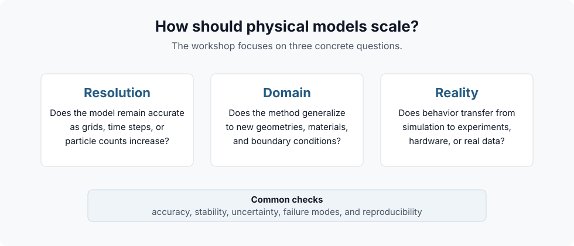
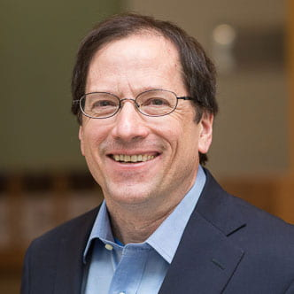
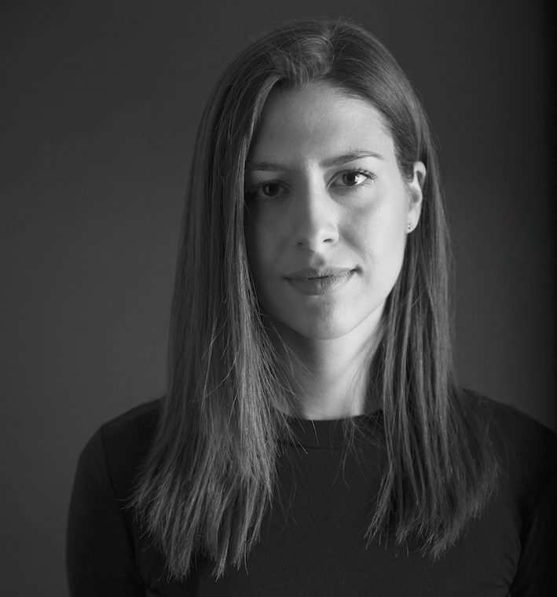
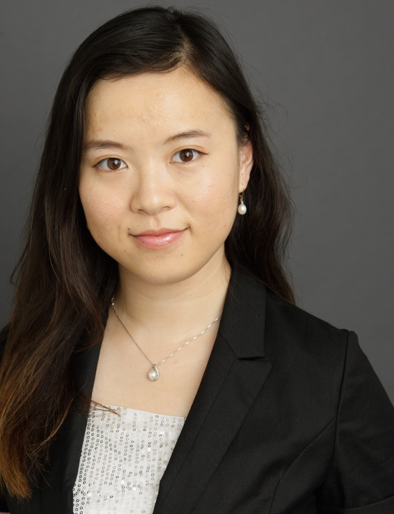
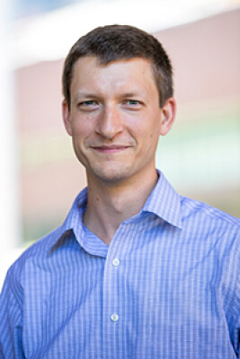
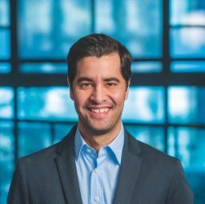

NeurIPS 2026 Workshop
Principles and Methods for Scaling
Physical simulation underpins work from protein dynamics and climate modeling to robotic control and metamaterial optimization. But high-fidelity physical methods still struggle to scale: across spatial and temporal resolutions, across the sim-to-real divide, and across the diversity of real-world physical regimes.
This workshop brings together researchers from machine learning, physics-based simulation, computer graphics, and computational design to examine the principles and methods that enable physical modeling to scale reliably.

Maintain fidelity as spatial/temporal resolution increases: neural operators, reduced-order models, multi-scale solvers.
Generalize across geometries, materials, and boundary conditions: foundation models for physics, geometry-aware architectures.
Bridge the sim-to-real gap: differentiable simulation, domain randomization, system identification.
We plan five invited talks selected from the confirmed and tentative speaker pool below.

MIT
Computational Imaging & Physical Inference
Tentative
MIT
Computational Design & Fabrication
Confirmed
UCSD
Spatiotemporal Learning & Physics-Informed ML
Confirmed
Harvard
Molecular Simulation & ML Force Fields
Tentative
University of Pennsylvania
Physics-Informed ML, Neural Operators & Uncertainty Quantification
ConfirmedMIT
Foundation Models & Scaling for Physical Learning
TentativeFull-day workshop (~8 hours). All times are tentative.
We invite submissions of 4-page extended abstracts (excluding references). Submissions are managed through OpenReview. Accepted contributions are non-archival and will not appear in proceedings. Previously published ML work, substantially finalized work already accepted elsewhere, and work presented at the NeurIPS main conference are not eligible.
University of British Columbia
UMass Amherst / MIT-IBM